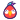

Inicio
Adopta
Perros
Gatos
Conejos
Roedores
Hurones
Aves
Reptiles
Otros
Protectoras
Qué es Kerubi
Inicia sesión
Regístrate
Ups, esta página ya no existe o se ha extraviado
Si quieres adoptar un animal, descúbrelos en las siguientes categorías
Perros
Gatos
Conejos
Roedores
Hurones
Aves
Reptiles
Otros
Nuestra recomendaciones de productos ayudan a mantener Kerubi
Descubre nuestras recomendaciones
Kerubi, plataforma de adopción
Síguenos:
Contacto:
hola@kerubi.es
Adopción de animales
Perros en adopción
Gatos en adopción
Conejos en adopción
Adopción de hamsters, cobayas y ratones
Hurones en adopción
Aves en adopción
Adopcion de reptiles
Adopcion de caballos, burros y animales de granja
Kerubi
¿Qúe es Kerubi?
¿Cómo funciona si soy adoptante?
¿Cómo funciona si soy protectora?
Preguntas frecuentes
Política de privacidad
Registrate
Clasificación de kerubers
Listado de protectoras
Adopción por provincias
Perros en adopción Madrid
Perros en adopción Barcelona
Perros en adopción Valencia
Perros en adopción Sevilla
Perros en adopción Alicante
Perros en adopción Málaga
Perros en adopción Murcia
Perros en adopción Cádiz
© 2022 Kerubi Kerubi.Todos los derechos reservados
Inicio
Adopta
Protectoras
Acceder